Estimation, Filtering, and Detection
Vladimír Havlena
vladimir.havlena@cvut.cz
EFD lecture notes, September 2024
Outline
- 1. About this course
- 2. Statistics, estimation methods
- 3. Bayesian method
- 4. Parameter estimation
- 5. Kalman filter
- 6. Change detection
- 7. Monte Carlo implementation of bayesian methods
- 8. Gaussian process regression
1. About this course
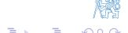
EFD course approach
Extraction of information about "hidden" variables in a stochastic dynamic system
System parameters
▶ I/O models (ARX, AXMAX)
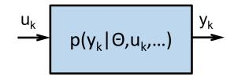
System identification
- ▶ structure determination
- ▶ parameter estimation
- ▶ batch/recursive algorithm
System state
▶ state-space models
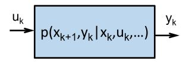
State estimation
- ▶ filtering
- ▶ prediction
- ▶ smoothing
Unifying framework - bayesian approach
$\(p(y|\theta,\ldots) \Rightarrow p(\theta|y,\ldots)\)$ \(p(y|x,\ldots) \Rightarrow p(x|y,\ldots)\) \(p(y|m,\ldots) \Rightarrow p(m|y,\ldots)\)
System mode
▶ bank of multiple models
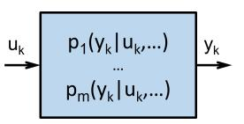
Fault detection and isolation
- ▶ system mode probability
- ▶ mode switching hidden Markov process
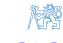
Course info (i)
Prerequisites
-
- Good foundation of linear system theory / control theory
-
- Basic knowledge of probability, statistics, and optimization
-
- Graduate level of mathematical and engineering competency (using math as a tool to formulate and solve problems)
-
- Working knowledge of MATLAB
Seminar
-
- Application of theory to selected examples (whiteboard / Matlab)
-
- Three homework assignments (5 bonus points for best solution presented)
-
- Mid year test
-
- Access to support material (MS Teams, Doodle, older lecture recordings)
Course info (ii)
Course evaluation (max 100 points per component)
-
- Seminar (mid-year test + 3 assignments + bonus points) 40% (limit 50 points for credit)
-
- Written test (10 + 2 questions, no references) 30% (limit 50 points to pass)
-
- Example (more complex, references permitted) 30%
-
- Oral exam
- ▶ clarifications in indeterminate cases
- ▶ supplementary reading included in lecture slides ("A" grade candidates)
Recommended reading
-
- F. L. Lewis, L. Xie and D. Popa: Optimal and Robust Estimation: With an Introduction to Stochastic Control Theory. CRC Press, 2005.
-
- V. Havlena a J. Štecha: Moderní teorie řízení. Nakladatelství ČVUT, Praha, 1999.
-
- D. Simon: Optimal state estimation. John Wiley & Sons, Inc., New Jersey, 2006.
-
- S. Särkkä: Bayesian Filtering and Smoothing. Cambridge Universdity Press, Cambridge, 2013.
-
- B. P. Gibbs: Advanced Kalman filtering, least squares and modeling: a practical handbook. John Wiley & Sons, Inc., New Jersey, 2011.
-
- B. D. O. Anderson and S. B. Moore: Optimal Filtering. Prentice Hall, USA, 2005.
-
- L. Ljung: System Identification Theory for the User. Prentice Hall, USA, 1999.
-
- C. E. Rasmussen and C. K. I. Williams: Gaussian Processes for Machine Learning. MIT Press, 2006, ISBN 026218253X. c
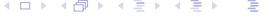
2. Statistics, estimation methods
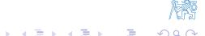
Statistics
Meaning of the term "statistics"
- ▶ Field of science, study of inference the process of drawing conclusions from data that are subject to uncertainty/random variations (pl. only)
- ▶ Any function of observed data drawn from pθ(x) independent of θ (sg. or pl.)
Statistical model
- ▶ Assumption about the population (sampling probability density function pθ(x))
- ▶ Requires good understanding of underlying first principles and causal relations (vs. correlation only)
Random sample
▶ Set of n representative data items selected from a statistical population
n – size of the sample, θ – parameter (may be unknown)
▶ Xi are i.i.d. random variables (independent, identically distributed)
Estimate
- ▶ A function of observed data (i.e. also a statistic) used to infer the value of an unknown parameter (e.g. µ, σ2 )
- ▶ Key properties to make it a useful estimate
- ▶ Unbiased
- ▶ Consistent (improves with sample size)
- ▶ Efficient (best of all alternative estimates, achieves Cramer-Rao bound)
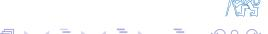
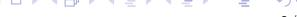
Some well-known statistics
Assumptions
- ▶ Xi are i.i.d. random variables
- ▶ Mean E {Xi} = µ, variance cov {Xi} = σ
Statistics
▶ Sample mean (sample average, arithmetic average)
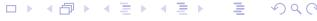
2
Some well-known statistics (2)
▶ Sample 2nd central moment – biased estimate of σ
2
▶ Sample variance – unbiased estimate of σ 2
▶ Identity (try to derive ...)
Huygens/Steiner parallel axis theorem in mechanics (X¯ – center of gravity)
Normal (Gaussian) distribution
Normal probability density function
▶ Fully defined by the mean \(\mu\) and the variance \(\sigma^2\)
Why it is so frequently used?
► Convenience – analytic formulas for many related statistics
Chi-square distribution, Student T-distribution, Fischer F-distribution etc.
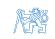
Normal (Gaussian) distribution (2)
- ▶ Empirical experience properties of populations, physical experiments etc.
- ▶ Central limit theorem
Theorem (Lindeberg/Lévy) – continuous random variables
Let Xi be a sequence of i.i.d. random variables, E {Xi} = µ, cov {Xi} = σ 2 . Then
Theorem (Moivre/Laplace) – discrete random variables
Let Xi be a sequence of i.i.d. random variables with alternative distribution P{Xi = 1} = q, P{Xi = 0} = 1 − q, E {Xi} = q, cov {Xi} = q(1 − q)). Then
Normal (Gaussian) distribution (3)
▶ Maximum entropy principle
Entropy – a measure of uncertainty for a given p.d.f. f (x)
Maximum entropy principle: for given moments
the probability density function f (x) resulting in maximum entropy H(x) can be characterized as
Example: assumption of normal distribution – minimum "added" information
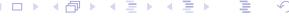
Multivariable Gaussian bell function
Multivariable normal p.d.f.
Covariance ellipsoid
► Random variable \((x-\hat{x})^T P^{-1}(x-\hat{x}) \sim \chi_n^2\) Why?
\(lackbox{ Probability content of covariance elipsoid } E_{lpha}\)
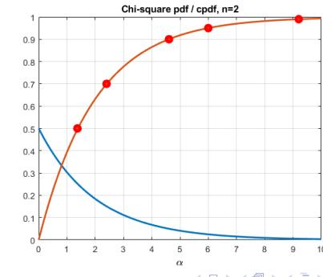
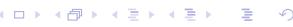
Multivariable Gaussian bell function (2)
Covariance ellipsoid shape
- ▶ Center of Eα mean xˆ
- ▶ Semi-axes Eα size/direction √ αλi vi
λi . . . eigenvalues of covariance matrix P
vi . . . unit eigenvectors of covariance matrix P
Example
Uncorrelated noise data xˆ = [0, 0]
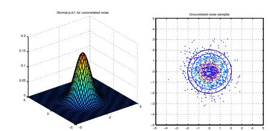
T Correlated noise data xˆ = [0, 0] T
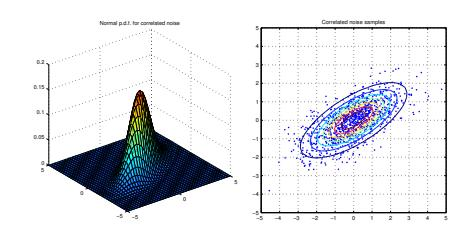
Mean Square Estimate
MS problem formulation
- ▶ Find estimate xˆ(y)
- ▶ x (random) vector to be estimated
- ▶ y observable data vector
- ▶ Information about x, y relationship joint p.d.f. p(x, y)
- ▶ Optimality criterion Mean Square (MS) error
▶ Minimization – rewrite joint p.d.f. as p(x, y) = p(x|y) p(y)
p.d.f. p(y) non-negative → sufficient to minimize inner integral (for each y)
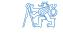
Mean Square Estimate (2)
► Inner integral
Stationary point
Conclusion: MS estimate – conditional mean value
► Measure of quality – estimation error covariance matrix
\(P_{x|y}(y)\) ..... covariance matrix of estimate error for given value of y
\(P_{x|y}\) ..... mean covariance matrix (independent of y)
► Criterion function – trace of error covariance matrix
Orthogonality principle
▶ Random variables x, y are orthogonal if
▶ Orthogonality principle for MS estimate: any function g(y) of observed data y satisfies
Proof: direct calculation
- ▶ MS error (x − E {x|y}) is orthogonal to all functions of observed data g(y)
- ▶ MS estimate is the best estimate of x based on observable data y in terms of Euclidian norm
where Euclidian norm
Linear Mean Square Estimate
Mean Square estimate xˆMS(y) issues
- ▶ Requires knowledge of joint distribution difficult to obtain from data
- ▶ Results in conditional mean analytical solution may not exist
LMS problem formulation
▶ Find estimate xˆLMS(y) as a linear function of observed data
- ▶ Information about x, y relationship joint 1st and 2nd moments only
- ▶ Optimality criterion Linear Mean Square (LMS) error
Linear Mean Square Estimate (2)
LMS criterion minimization
▶ Properties of trace operator
helpful hint: write x as µx + ˜x
▶ Formulas from matrix analysis
▶ Stationary point conditions
▶ Resulting estimate (covariance matrix Pyy positive definite → is regular)
depends only on the 1st and 2nd moments
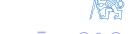
Linear Mean Square Estimate (3)
Interpretation of LMS formula
▶ Correction gain PxyP −1 yy
LMS error covariance
▶ Px˜LMS does not depend on y
Orthogonality principle for LMS estimate
▶ LMS error orthogonal to all linear functions of observable data g(y) = Ay + b
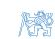
MS and LMS estimate for normally distributed variables
Joint normal p.d.f. \((y, x - \text{vectors with } n_y, n_x \text{ elements})\)
Conditional p.d.f.
▶ Use chain rule p(x, y) = p(y) p(x|y)
where
Conclusion: conditional mean is a linear function of the data, therefore
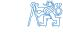
How to factorize the joint p.d.f. ?
ightharpoonup Joint covariance matrix ightharpoonup product of triangular matrices
ightharpoonup Transformation matrix with unit determinant ightharpoonup factor determinant
▶ Inverse of covariance matrix from inverse of triangular factors
► Factor quadratic form
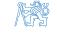
Maximum Likelihood Estimate
Classical (frequentist) approach
- Parameter x of p.d.f. \(p_x(y)\) is a deterministic but unknown constant
- Sampled data
For deterministic x, the c.p.d.f. p(x|y) is not well defined
Likelihood function
ightharpoonup C.p.d.f. p(y|x) interpreted as a function of unknown parameter x
Maximum Likelihood (ML) estimate
► Maximize the likelihood for given data
Likelihood equation (using the fact that log(.) function is monotonic)
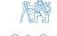
Maximum Likelihood Estimate – example
Example: repeated measurement with gaussian noise
▶ Measurement model y = Cx + e
▶ For given x, y is a linear transformation of r.v. e
(random variable transformation theorem)
▶ Likelihood function
log likelihood
likelihood equation
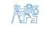
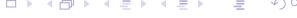
Maximum Likelihood Estimate – example (2)
Resulting ML estimate
▶ Well designed experiment → matrix C has full rank
▶ Model of n independent samples with various precision
► ML estimate – weighted average
weights proportional to precisions \(1/\sigma_i^2\)
► For samples with equal precision – arithmetic average
Properties of ML estimate
Linear measurement model
ML estimate of x is unbiased
Estimation error covariance matrix
Theorem (Cramér–Rao)
Let \(\hat{x}(y)\) be unbiased estimate of parameter x based on data y. Then the covariance matrix of \(\tilde{x}_{ML}\) is bounded \(P_{\tilde{x}} \geq F^{-1}(x)\) by the Fischer information matrix
Equality applies iff
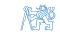
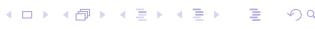
Estimate is unbiased – by definition
▶ Derivative of this integral with respect to (unknown) parameter x
first term R p(y|x)dy = 1
second term – log derivative $\(\frac{\partial p(y|x)}{\partial x} = p(y|x) \frac{\partial \ln p(y|x)}{\partial x} = p(y|x) \frac{\partial \ln l(x|y)}{\partial x}\)$
▶ Resulting formula
▶ Apply Schwarz inequality E {f (y)g(y)} ≤ p E {f 2(y)} E {g 2(y)}
Interpretation: information about x – mean "curvature" of ln l(x|y)
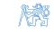
Properties of ML estimate (2)
▶ Estimate is efficient – Cramer Rao bound
▶ Estimate is consistent – convergency in probability
Example: Repeated measurement with gaussian noise (contd.)
▶ Fischer information matrix
Conclusion 1: Px˜ML = F −1 , estimate xˆML(y) is efficient
▶ Convergence (for σ n limited)
Conclusion 2: Px˜ML → 0, estimate xˆML(y) is consistent
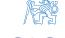
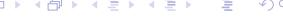
Comparison of MS and a ML estimate
Linear measurement model
MS estimate
▶ Minimize parameter error
▶ Formula MS estimate
ML estimate
▶ Minimize weighted prediction error
▶ Formula for ML estimate
▶ Limit case of MS estimate (missing prior information on x)
▶ Regularized ML estimate (P −1 x˜ML = εI + C T R −1C or P −1 x˜ML = P −1 xx + C T R −1C)
Formulas for MS estimate
▶ MS estimate covariance
last step follows from Matrix Inversion Lemma (MIL)
▶ MS estimate mean
Examples of ML estimates
Alternative/Bernouli distribution
▶ Result of coin tossing experiment
for n independent trials \(x = [x_1, x_2, \dots, x_n]^T\)
Log likelihood function
likelihood equation
- Conclusions
- ▶ ML estimate is defined by sample average
- ► ML estimate can be updated recursively
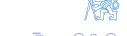
Examples of ML estimates (2)
Uniform distribution
Probability density function
$\(p(x|\theta) = U_{\theta}(x) = \frac{1}{2\theta}\)$
for \(x \in \langle -\theta, \theta \rangle\)
= 0 otherwise
Likelihood function – estimate θ should maximize
for all observed \(x_i \in \langle -\theta, \theta \rangle\)
- Conclusions
- ▶ ML estimate is defined by sample maximum
ML estimate can be updated recursively
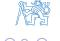
Examples of ML estimates (3)
Cauchy distribution
▶ Probability density function
- ► "Heavy tails" used in robustness analysis
- Log likelihhod
maximize \(L_n(\theta) \rightarrow\) minimize the term
- Conclusions
- only numerical solution available
- ▶ no "smaller" statistics than the full data set
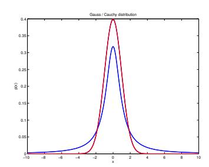
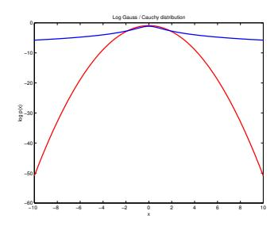
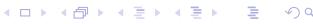
3. Bayesian method
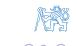
Classical vs. bayesian statistics
Classical (frequentist) approach
- ▶ Probability = limit of relative frequency of given event
- ▶ Objective quality, independent of the observer
- ▶ Limit results based on infinite data set
Bayesian approach
- ▶ Probability density function can describe
- ▶ randomness of a family of i.i.d. samples "objective" p.d.f.
- ▶ uncertainty of a single parameter "subjective" p.d.f.
- ▶ Rational behaviour under uncertainty
- ▶ uncertainty has the same structure as probability
- ▶ probability theory tool for description of accumulation of information from data
- ▶ Analysis based on finite data set
- ▶ Still a matter of dispute
Bayesian inference
Elements of Bayes formula
Bayes formula (we do not "estimate" – we "calculate" posterior)
\(\blacktriangleright\) Model: explain observations \(y_i\) by some unknown internal parameter \(\theta\) (direct probability)
\(\triangleright\) Subjective p.d.f. of parameter \(\theta\) – statistician's knowledge about the world (inverse probability)
subjective knowledge is corrected by objective information in the data
- posterior c.p.d.f. is proportional to prior c.p.d.f. multiplied by likelihood
- likelihood \(I(\theta|y_i)\) represents all information about \(\theta\) in the data item \(y_i\)
- p.d.f. describes uncertainty in parameter vs. randomness in observations
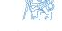
Bayesian inference - unfair coin example
Application of Bayesian formula
▶ Model: experiment outcome y ∈ {0, 1}
- ▶ Prior p.d.f.: p(θ) = 1 for θ ∈ ⟨0, 1⟩, otherwise p(θ) = 0
- ▶ Update by nth independent trial
▶ Resulting c.p.d.f. for θ = 0.35, n = 1, 3, 5, 10, 40
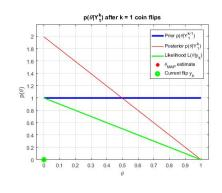
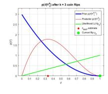
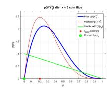
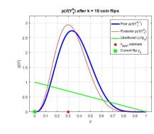
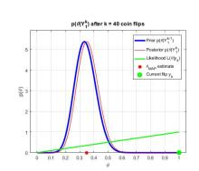

Bayesian inference (2)
Conjugated prior
▶ Utilize naturally recursive character of bayesian update
- ▶ Analytic formula for p.d.f. is preserved (invariant w.r.t. update by likelihood) (for example normal prior × normal likelihood → normal posterior )
- ▶ Functional recursion can be reduced to algebraic recursion on parameters of p.d.f. (for example mean and covariance for normal distribution)
- ▶ Selection of prior information supplementary reading
Chain rule
- ▶ Composition of uncertain information
- ▶ No assumption on independency (e.g. for time dependent variables)
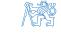
Supplementary reading
Selection of prior p.d.f.
Core of bayesian approach criticism - dependence of the result on prior selection
- ▶ Non-informative prior locally flat with respect to likelihood function
- ▶ Principle of stable estimate information in data will dominate the prior (otherwise experiment does not make much sense)
- ▶ Informative prior can improve transient properties (e.g. parameter identification for adaptive control)
Problem – how to parameterize the model ?
- ▶ Inference in different "coordinates" may result in different results ? (e.g. estimation of σ vs. σ 2 )
- ▶ In which coordinates is the locally flat p.d.f. really non-informative ?
Jeffrey's rule
▶ Prior p.d.f. should be proportional to square root of Fischer information
▶ Prior p.d.f. uniform iff F(θ) does not depend on θ – "data translated" likelihood
Example (prior p.d.f. for scale parameter)
Assume \(\mu\) is known
lacktriangle Likelihood function for \(\sigma\) is not "data translated" (data \(\sim\) statistics \(n,\ s^2\) )
\(\blacktriangleright\) Use transformed coordinates In \(\sigma\)
likelihood function \(I(\ln \sigma | \mu, y)\) is "data translated" (can you validate ?) non-informative prior for \(\ln \sigma\) is uniform p.d.f. (for \(\sigma > 0\) )
Non-informative prior for \(\sigma\) (theorem on transformation of p.d.f.)
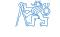
Parameters of normal distribution
Estimation of µ for known σ
Goal: Find posterior p.d.f. p(µ| σ, y)
$\(y = [y_1, \dots, y_n]^T \sim \mathcal{N}(\mu, \sigma^2)\)$ , \(\sigma^2\) is known
▶ Likelihood function
- ▶ Data represented by sample average y = 1 n Pn i=1 yi
- ▶ Non-informative prior p(µ| σ) ∝ const.
- ▶ Posterior p.d.f.
compare with sample average properties
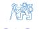
Parameters of normal distribution (2)
Simultaneous estimate of µ and σ
Goal: Find posterior p.d.f. p(µ, σ| y)
▶ Likelihood function
arrange the exponent as
▶ Data represented by sample average, degrees of freedom and sample variance
▶ Resulting likelihood form
▶ Non-informative prior p(µ| σ) ∝ const., p(σ) ∝ σ−1

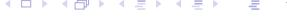
Parameters of normal distribution (3)
▶ Posterior p.d.f.
can be normalized using integrals
▶ Joint posterior can be factorized as p(µ, σ| y) = p(µ| σ, y) p(σ| y)
Conditional p.d.f. for µ
Marginal p.d.f. for σ
mean value E σ 2 | y = s
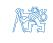
Parameters of normal distribution (3)
Marginal c.p.d.f. of µ for unknown σ
▶ Example of nuisance parameter use
▶ Using the same integrals as previous slide, get
Normalized p.h.p. of µ
i.e. normalized value t = µ − y s/ √ n ∼ Student t-distribution with ν degrees of freedom
For large ν ≫ 10, Student t-distribution can be approximated by normal distribution
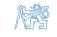

Sufficient statistics
Likelihood principle
▶ Data affect the posterior only via likelihood function
▶ Estimate of µ for given σ
sufficient statistics for µ – a couple {y, n} or equivalent
▶ Simultaneous estimate of µ, σ
sufficient statistics for µ, σ – a triple {y, s 2 , n} or equivalent
- ▶ Statistic with minimum number of elements minimal sufficient statistic
- ▶ Existence of finite sufficient statistics
- ▶ accumulation of information from data in limited memory space
- ▶ corresponds to the concept of "state" of dynamic system
Informative prior for \(\sigma\)
Thought experiment
▶ Define the prior p.d.f. \(p(\sigma)\) by using auxiliary data set
resulting posterior p.d.f. of \(\sigma\) can be used as informative prior
Posterior p.d.f. using actual data
- ▶ Degrees of freedom \(\overline{\nu} = \nu_a + \nu\)
- \(\blacktriangleright \text{ Variance } \overline{\nu}\,\overline{s}^2 = \nu_a s_a^2 + \nu s^2\)
- ightharpoonup Conditional \(p(\mu | \sigma, y)\) will not be affected
Composition of informative prior with data – initial statistics
- \(\triangleright \nu_a\) prior accuracy (in terms of sample size)
- \(ightharpoonup s_a^2\) prior information about \(\sigma^2\) value
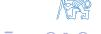
4. Parameter estimation
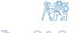
Model of a dynamic system for control
Objective: system identification for optimal (adaptive) control based on observed data
▶ Data available at time t: input variables u, output variables y
$\(\mathcal{D}^{t} = \{u(0), y(0), \dots, u(t), y(t)\}\$\)
▶ Problem formulation: optimal control law on T-step horizon – criterion
▶ Need to evaluate p.d.f (using chain rule)
p
Model of a dynamic system for control (2)
Controlled system model = set of c.p.d.f.
Control law = set of c.p.d.f.
Sampling scheme
▶ Information available at time t → information delay in closed loop (causality of the control law)
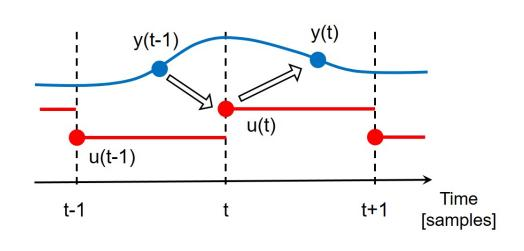
System model = predictor of system output based on history and current input
Model structure and parameters
System model / predictor
- ► Non-parametric (used in ML/AI)
- Parametric (preferred in system identification why ?)
- Model structure \(p\left(y(t) | u(t), \mathcal{D}^{t-1}, \theta\right)\)
- Knowledge of parameters \(p\left(\theta \middle| u(t), \mathcal{D}^{t-1}\right)\)
Update of parameter knowledge based on new data \(\{u(t), y(t)\}\)
- lacktriangle Model structure likelihood function of parameter heta
- Assumption \(p\left(\theta \middle| u(t), \mathcal{D}^{t-1}\right) = p\left(\theta \middle| \mathcal{D}^{t-1}\right)\)

Model structure and parameters (2)
Natural condition of control
Interpretation
-
- Calculation of new input does not affect knowledge of internal parameters
- ▶ valid for LQG controller with incomplete state information
- ▶ not true for LQ with complete state information
-
- Implies also
▶ two alternatives how to factor joint p.d.f.
▶ all information relevant for control law design is contained in the data Dt−1
Model structure and parameters (3)
Time varying systems
▶ Parameter θ is (slowly) time varying
Update of parameter c.p.d.f. in two steps
▶ Data update step (filtering) – using bayes formula
▶ Time update step (prediction) – using model
▶ Parameter development model not known, replaced by heuristics (forgetting)
p θ(t)|Dt → p θ(t +1)|Dt
p
Frequently used structures of input-output models
Data generator
▶ State-space model of linear stochastic system
$\(ightharpoonup v(t)\)$ , \(e(t)\) white sequences, \(\mathcal{E}\left\{\left[egin{array}{c} v(t)\\ e(t) \end{array}\right]\left[egin{array}{c} v(t)\\ e(t) \end{array}\right]^T\right\}=\left[egin{array}{c} Q & 0\\ 0 & R \end{array}\right]\)
Output data properties
▶ Deterministic part of the model (I/O transfer function)
▶ Stochastic part of the model (factorized power spectrum density)
▶ Generic I/O description of generated data
$\(y(t) = G(d)u(t) + H(d)e(t)\)$ \(d = z^{-1}\) delay operator
▶ Pulse response matrices
$\(G(d) = G_0 + G_1 d + G_2 d^2 + \cdots\)$ deterministic transfer function \(H(d) = I + H_1 d + H_2 d^2 + \cdots\) noise shaping filter (monic)
Frequently used structures of input-output models (2)
System model for control – predictive c.p.d.f. p y(t)|u(t), Dt−1 , θ
Equivalent "data generator" and "predictor"
▶ Spectral factorization of Syy (z)
$\(H(d)\)$ stable, minimum phase \(\rightarrow\) inverse filter \(H^{-1}(d)\) stable
▶ Noise sequence e(t) given by data u(t), y(t)
▶ Predicted output value y(t) – separate past and new information
second term depends only on past data Dt−1
simplified notation yˆ t Dt−1 , u(t), θ = ˆy (t |t−1, u(t) )

Frequently used structures of input-output models (3)
Predictor equation
▶ Predicted mean value – depends on noise properties
predictor vs. data generator dynamics
▶ Probabilistic description
transformation of random variable e(t)
ARX model
ARX model (Auto Regressive model with eXternal input)
▶ Linear difference equation + stochastic term e(t) ∼ 0, σ2 e
also called equation error model
▶ Polynomial description – polynomials in delay operator d
$\(a(d) = 1 + a_1 d + \dots + a_{n_a} d^{n_a}\)$ , \(b(d) = b_0 + b_1 d + \dots + b_{n_b} d^{n_b}\)
na, nb – structural parameters of the model
▶ Difference equation form
▶ Fractional form
- ▶ transfer function of the deterministic part chosen arbitrarily
- ▶ noise shaping filter defined implicitly
ARX model (2)
ARX predictor
Generic form
- For ARX model \(G(d) = \frac{b(d)}{a(d)}\) , \(H(d) = \frac{1}{a(d)}\)
- Resulting predictor
- Define
- parameter vector
data vector (regressor)
▶ Predicted output value is a linear function of parameters
- ARX parameter estimation linear regression
- \(\blacktriangleright \ \, \text{For gaussian noise} \quad e(t) \sim \mathcal{N}\left(0,\sigma_e^2\right) \ \rightarrow \ \, p(y(t)|u(t),\mathcal{D}^{t-1},\theta) = \mathcal{N}\left(z^T\!(t)\theta,\,\sigma_e^2\right)\)
ARMAX model
ARMAX model (Auto Regressive Moving Average model with eXternal input)
▶ Model of stochastic part – equation error defined by MA process
- ▶ Polynomial description monic polynomial c(d) = 1 + c1d + · · · + cnc d nc
- ▶ Difference equation form
▶ Fractional form
▶ independent properties of deterministic and stochastic part
ARMAX predictor
▶ Generic form
- ▶ For ARMAX model G(d) = b(d) a(d) , H(d) = c(d) a(d)
- ▶ Resulting predictor

ARMAX model (2)
ARMAX predictor
- ▶ Define
- ▶ prediction error
▶ parameter vector
T
▶ regressor
data items ε(t−1|t−2), . . . depend on parameter values θ
▶ Predicted output value is not a linear function of parameters
- ▶ ARMAX parameter estimation pseudolinear regression
- ▶ approximate method
- ▶ simple recursive implementation, convergence conditions known
- ▶ option: use posterior prediction error ε(t|t) in the regressor
ARMAX model (3)
ARMAX model is equivalent to state-space model in observer canonical form
Output value
Represent delayed terms by states
Output error model
OE (output error) model
▶ Stochastic component = output measurement error
▶ Polynomial description
OE model is equivalent to ARMAX model for c(d) = a(d)
OE predictor
▶ Generic form (for OE model, H(d) = 1)
▶ Resulting predictor
Output error model (2)
OE predictor
- ▶ Define
- ▶ Parameter vector
▶ Regressor
data items yˆ(t−1|t−2), . . . depend on parameter values θ
▶ Predicted output value is not a linear function of parameters
- ▶ OE parameter estimation pseudo linear regression
- ▶ parallel model without any correction by observed data y(t)
- ▶ approximate method
- ▶ option: use posterior predicted value yˆ(t|t) in the regressor
Positional vs. incremental model
Incremental model (ARX example)
▶ Stochastic component – random walk (process with independent increments)
▶ Equation error model with random walk stochastic component
subtract equation for output y(t−1)
increments $\(\Delta y(t) = y(t) - y(t-1)\)$ , \(\Delta u(t) = u(t) - u(t-1)\)
▶ Predictor
reference for prediction – past output
- ▶ Properties of incremental models
- ▶ compensation of piecewise constant disturbance
- ▶ control action with integral character (piecewise constant reference)
Least square method
History
-
Solution of overdetermined equation systems
-
▶ minimize the sum of the squares of the residuals \(e_k = y_k f(x_k, \theta)\) ▶ first application: Gauss used LS to process data about the newly discovered planetoid Ceres in 1795
- Linear regression problem e.g. ARX parameter estimation
- ► Alternative formulations e.g. error in variables
- also the independent variables are uncertain
- more complex problem (iterative solution required)
ARX model estimation (batch data processing)
Batch processing
Set of observed data
$\(\mathcal{D}_1^T = \{u(1), y(1), \dots, u(T), y(T)\}\$\)
(initial data - not included in this notation)
Model structure
► Compact matrix notation
output vector
regressor (data) matrix
prediction error vector
ARX model estimation (batch data processing) (2)
Bayesian estimate
▶ Likelihood function (transformation E = Y − Zθ)
▶ Rearrange quadratic form
parameter estimate
output prediction
▶ Residual sum of squares / degrees of freedom
▶ Posterior c.p.d.f. of parameters θ and σe (with non-informative priors)
ARX model estimation (batch data processing) (3)
- ▶ Posterior c.p.d.f. of parameters θ and σe
- ▶ c.p.d.f. of θ for given σe
normal distribution
▶ c.p.d.f. of σe
χ distribution
noise variance
▶ marginal distribution of θ (averaged over σe )
n–dimensional Student t–distribution with ν degrees of freedom

ARX model estimation (batch data processing) (4)
Bias of ARX model parameter estimate
Data matrix Z not correlated with noise vector E
- unbiased estimate of \(\theta\)
- ▶ valid for Finite Impulse Response (FIR) model
▶ Data matrix Z contains noise vector elements e(.)
- true for general ARX model
- output observations y(.) in data matrix
ARX model estimation - order selection
Example : 4th order data generator with ARX structure, σ 2 e = 0.25 × 10−4
ARX model estimation - order selection (2)
How to evaluate resulting model quality ?
▶ Residual sum of squares / estimated noise variance
▶ Akaike information criterion AIC (penalizing model complexity)
ARX model estimation - order selection (3)
How to evaluate resulting model quality (contd.) ?
▶ Prediction error covariance function (data set size T, lag k < K ≪ T)
▶ Parameter significance (vs. zero value hypothesis)
▶ Compare models of 2nd and 6th order
ARX model estimation - order selection (4)
Textbook example results
▶ Data generator with ARX structure used
ARX model estimation - order selection (5)
More realistic example results
▶ Data generator with ARMAX structure used, c(d) = 1 + d + d
ARX model estimation (recursive data processing)
Conjugated prior (follows from batch processing)
▶ Self-reproducing c.p.d.f.
▶ Data update step → algebraic recursion for statistics θˆ(t), P(t), s 2 (t), ν(t)
▶ Resulting formulas for statistics
▶ Auxiliary variables (prediction error, regressor norm)
Data update step
▶ Model/likelihood function – predictive c.p.d.f. of output y(t)
Application of Bayes formula
lacktriangle Compare expressions in exponents ightarrow recursions for statistics
Supplementary reading
ARX model estimation (recursive data processing) (2)
ightharpoonup Compare functions of parameter \(\theta\)
Normalized covariance matrix
Matrix Inversion Lemma (MIL)
ightharpoonup Mean value of parameter heta
Supplementary reading
ARX model estimation (recursive data processing) (3)
- ▶ Compare functions of noise variance \(\sigma_e\)
- Number of degrees of freedom
Residual sum of squares
Note: compare with output prediction error
- How to initialize the recursions ?
- \(ightharpoonup s^2(0)\) ... prior estimate of noise variance \(\sigma_e^2\)
- ightharpoonup u(0) ... weight of prior variance \(\sigma_e^2\) (auxiliary data sample size)
- \(\hat{\theta}(0)\) ... prior estimate of parameters
- ightharpoonup P(0) ... prior estimate of parameter covariance matrix (normalized by \(s^2(0)\) )
- Time update step not needed
ARX model estimation - recursive algorithm convergence
Batch vs. recusive results
- ▶ Terminal values of recusive processing equivalent to batch processing
- ▶ Impact of excitation
- ▶ Uncertainty of ai vs. bi parameters
ARX model – tracking of time-varying parameters
Slowly time-varying parameters: change of notation θ, σe → θ(t), σe (t)
▶ Data update step
▶ statistics depend on time and available data
▶ resulting formulas for statistics
▶ auxiliary variables (prediction error, regressor norm)

ARX model – tracking of time-varying parameters (2)
▶ Time update step (naive model)
▶ resulting update statistics for θ
▶ parameter tracking ability – Kalman gain
proportional to (normalized) parameter covariance matrix P(t|t−1)
▶ sufficient excitation condition – information matrix increasing in time
covariance matrix is upper-limited
▶ Impact of new data (Kalman gain) is diminishing – naive model does not work
ARX model – tracking of time-varying parameters (3)
▶ Time update – conceptual solution
parameter development model given by c.p.d.f.
▶ Impact of convolution integral – increase of parameter uncertainty
Linear forgetting
▶ Model of parameter drift
time update of parameter covariance matrix
- ▶ Prior information about drift directions can be incorporated in V (t)
- ▶ Time-varying noise variance not covered
ARX model – tracking of time-varying parameters (4)
Exponential forgetting
▶ Direct increase of parameter uncertainty for both θ and σe
▶ Resulting statistics
- ▶ Properties
- ▶ increase of θ uncertainty multiplication of covariance by 1/φ ≥ 1
- ▶ efficient sample size used to estimate σ e (t) reduced – steady-state value
"data window" length – how to choose φ ?

Exponential forgetting formulas
▶ Time-update step – conceptual solution
▶ After substitution
▶ Time-update for individual statistics – by comparison, e.g.
ARX model with forgetting - combined time-update and data-update step
If only a single time index is used, be cautious
Combined recursion for predicted values
Combined recursion for filtered values
Definitions used
Problems with parameter tracking
Poor system excitation
- ▶ Linear interdependence of data items e.g. closed-loop identification
- ▶ No information about the parameter value in some directions
- ▶ information subject to forgetting not replaced by new one
- ▶ covariance wind–up unlimited growth of some eigenvalues of covariance matrix
Possible solutions
- ▶ Excitation by external signals optimal experiment design
- ▶ Exponential forgetting with varying forgetting factor
- ▶ fixed trace of covariance matrix ⇒ limited eigenvalues of P(t +1|t)
- ▶ constant "information content" concept (Fortesque, 1981)
- ▶ Restricted forgetting concept (Kulhavý, 1987)
- ▶ forget only information that has been modified during data update step
Restricted forgetting
Data update
▶ Parameter uncertainty
▶ Uncertainty of scalar product x T θ
▶ Covariance matrix update
▶ Uncertainty in regressor data direction z(t)
uncertainty reduced by factor 1/(1 + ζ(t|t−1))
▶ Uncertainty in orthogonal directions x(t) ⊥P z(t)
no uncertainty reduction
Restricted forgetting (2)
Time update
- Use selective uncertainty increase
- Regressor data direction z(t) follow the drift model
where
▶ Orthogonal directions \(x(t) \perp_P z(t)\) – no uncertainty increase
► Can be achieved by "restricted" drift covariance matrix
Validate by direct calculation ...
Restricted forgetting (3)
Restricted linear forgetting
▶ Relation for Kalman gain
▶ Restricted drift covariance matrix
Restricted exponential forgetting
▶ Equivalent parameter drift model
▶ Restricted drift covariance matrix
Restricted forgetting (4)
▶ Combined time-update + data-update step
where
▶ MIL → weight of z(t)z T(t) dyad in information matrix update
- ▶ for φ < 1/(1 + ζ) uncertainty increase (α < 0)
- ▶ for φ > 1/(1 + ζ) uncertainty reduction (α > 0)
- ▶ Restricted forgetting limited to a single direction both LF/EF interpretations
- ▶ equivalent forgetting factor
▶ derive from LF model, use also for EF on σe statistics
Numerical implementation of bayesian estimation algorithms
Conditioning for gaussian variables
Joint probability density function
▶ LD-factorization of joint covariance matrix
\(L_y\) , \(L_{x|y}\) monic lower triangual
$\(D_y = \operatorname{diag} d_y\)$ , \(D_{x|y} = \operatorname{diag} d_{x|y}\) non-negative
▶ Substitute into formulas for conditional mean and covariance matrix
$\(\mu_{x|y} = \mu_x + P_{xy}P_{yy}^{-1}(y - \mu_y)\)$ , \(P_{x|y} = P_{xx} - P_{xy}P_{yy}^{-1}P_{yx}\)
all the terms can be defined in terms of LD factors
Numerical implementation of bayesian estimation algorithms (2)
Conditioning for gaussian variables – results
▶ LD-factors of the joint covariance matrix
\(\triangleright\) Factors of the marginal covariance matrix \(P_y\)
Factors of the conditional covariance matrix \(P_{x|y}\)
Conditioned mean
$\(\mu_{x|y} = \mu_x + KL_y^{-1}\varepsilon\)$ , where \(\varepsilon = y - \mu_y\) .
In scalar case, LD–factorization directly provides Kalman gain
Avoid LD-factorization, implement direct update of the LD-factors
Numerical implementation of bayesian estimation algorithms (3)
Linear regression with LD-factorized covariance matrix
▶ Algorithm input: LD-factors (monic lower triangular/non-negative diagonal)
▶ Joint covariance matrix of output \(y(t) = z^{T}(t)\theta(t)\) and parameters \(\theta(t)\)
► Transform the factors to get triangular L-matrix (e.g. dyadic reduction algorithm)
Algorithm output: LD-factors of joint distribution
- k(t) Kalman gain
- \(d_{y}(t) = 1 + \zeta(t|t-1)\) normalized output variance
- d(t|t), L(t|t) LD-factors of posterior parameter covariance matrix
Numerical implementation of bayesian estimation algorithms (4)
Data update step
- ▶ Parameter covariance factors
- P(t|t) = L(t|t)D(t|t)L T (t|t) = d(t|t); L T (t|t)
▶ Parameter mean value
θˆ(t|t) = θˆ(t|t−1) + k(t)ε(t|t−1)
▶ Number of degrees of freedom
ν(t|t) = ν(t|t−1) + 1
▶ Sum of residual squares
Time update step – exponential forgetting
▶ Covariance matrix
▶ Other statistics

Numerical implementation of bayesian estimation algorithms (5)
Time update - linear forgetting
Covariance matrix (parameter drift in factorized form)
$\(P(t+1|t) = P(t|t) + V(t)\)$ , \(V(t) = \left| d_v(t); L_v^T(t) \right|\)
update triangularity to get \(\mathit{L}(t+1|t)\) – significant computational burden
Time update – restricted forgetting
Covariance matrix (restricted exponential forgetting)
Covariance update (restricted linear forgetting)
Rank-1 update – more numerically efficient
Numerical implementation of bayesian estimation algorithms (6)
Dyadic reduction algorithm
- ▶ Input: factorized covariance matrix R = MDMT
- M extended monic lower triangular → recover triangularity
- ▶ Hint: operate on sum of two dyads (mi monic)
m
Algorithm: The dyads can be modified to
where
Numerical implementation of bayesian estimation algorithms (7)
MATLAB function LDFIL
function [stheta_out, ssigma_out, k, eps, dy] ...
= ldfil(stheta, ssigma, data, phi)
% =========================================================
% LDFIL - ARX identification with LD factorized covariance
% =========================================================
% stheta = [theta,d,L^T]
% ssigma = [nu,nus2]
% data = [z^T,y]
% phi = forgetting coefficient
% =========================================================
% unpack input ============================================
n = length(data) - 1;
z = data(1:n)';
y = data(n+1);
theta = stheta(:,1);
dth = stheta(:,2);
ltht = stheta(:,3:n+2);
% check forgetting factor =================================
if nargin < 4,
phi = 1;
else
phi = min(phi,1);
phi = max(phi,.01);
end
% update covariance =======================================
m = [1, zeros(1,n); ltht*z, ltht ];
d = [1; dth ];
% run dydr for i=1 ========================
for j = n+1:-1:2,
mji = m(j,1);
di = d(1)+mji*mji*d(j);
mu = mji*d(j)/di;
d(j) = d(j)*d(1)/di;
d(1) = di;
m(j,:) = m(j,:)-mji*m(1,:);
m(1,:) = m(1,:)+mu*m(j,:);
end
% decompose ===============================
dy = d(1);
dth = d(2:n+1)/phi;
ltht = m(2:n+1,2:n+1);
k = m(1,2:n+1)';
% update theta ============================
eps = y - z'*theta;
theta = theta + k*eps;
stheta_out = [theta,dth,ltht];
% update sigma ============================
if ~isempty(ssigma)
nu = ssigma(1);
nus2 = ssigma(2);
nu = phi*(nu+1);
nus2 = phi*(nus2+eps*eps/dy);
ssigma_out = [nu,nus2];
else
ssigma_out = [];
end
Try to modify to other forgetting methods (restricted linear/exponential)
Convergence of the Least-Square method
Convergence vs. experiment design
Data generator
(otherwise parameter "true" value not well defined)
▶ Parameter error converges to zero
under sufficient excitation condition
- Experiment design: quality of data test eigenvalues of \(\sum_{\tau=1}^{t} z(\tau)z^{T}(\tau)\)
- ► Tracking of time-varying parameters persistent excitation condition
(sufficient excitation in all time intervals)
Stability of parameter error (Lyapunov method)
- ▶ Parameter error state of corresponding dynamic system
- Data update step
transition matrix
parameter error dynamics
▶ Lyapunov function – use positive definite precision matrix \(P^{-1}(t)\)
Lyapunov function non-increasing \(\rightarrow\) parameter error is Lyapunov–stable
Supplementary reading
Convergence of the Least-Square method (2)
► Increment of the Lyapunov function
using estimation error dynamics
resulting formula
Conclusion: Lyapunov function is non-increasing
▶ Lyapunov function is non-increasing (bounded) and also
▶ Minimum eigenvalue of precision matrix
▶ If the minimum eigenvalue is increasing (sufficient excitation condition)
then for bounded Lyapunov function
Incorporation of prior information
What information can be provided during algorithm initialization ?
▶ C.p.d.f. of parameters θ and σe
▶ Noise variance estimate
Confidence intervals for θ
▶ Assume
translates to prior mean value
and prior covariance matrix diagonal elements (interval ± α σθ, α = 2 . . . 3)

Incorporation of prior information (2)
Parameter drift covariance "shaping"
▶ Parameter drift – linear forgetting
▶ Define "significant" direction l l T Vl = σ1 l T l other directions x ⊥ l x T Vx = σ0 x T x
▶ This property will be satisfied by drift covariance matrix
(prove by substitution)
▶ Applications: fixed steady-state gain, time-varying transport delay etc.
Smooth impulse response
Model
▶ Translate "smoothness" to prior information on \(\tilde{g}_i = g_i - \hat{g}_i(1|0)\)
using matrix notation
► Initialize covariance matrix P(1|0)
therefore
▶ Further improvement: "decreasing curvature" for \(\Delta^2 \tilde{g}_i \approx \sigma_{g_i}^2\)
5. Kalman filter
Linear stochastic system
State-space model
\(\delta(t_1-t_2)\) Kronecker symbol (vs. Dirac pulse in continuous time)
Time evolution of state and output
Mean values
Covariance matrices
Hint: use dynamics of error $\(\tilde{x}(t)=x(t)-\hat{x}(t),\ \tilde{y}(t)=y(t)-\hat{y}(t)\)$

Linear stochastic system (2)
For stable matrix A, \(P_x(t)\) will converge to steady-state covariance of the state
steady-state solution satisfies Lyapunov equation
- Interpretation of Lyapunov equation
- ightharpoonup stability test for deterministic system \(AP_xA^T-P_x=-Q\)
- steady-state covariance matrix for stochastic system
Sampling of continuous-time linear stochastic system
▶ Continuous-time dynamics, discrete time output measurement
\(dv_c(\tau)\) – increment of Wiener process
Linear stochastic system (3)
Asynchronous sampling scheme
- ▶ Relative delay ε = (Ts − Tc )/Ts ) (see sampling scheme in Chapter 4)
- ▶ Deterministic part of the model
▶ Stochastic part of the model
Discrete-time covariance matrix of noise inputs for ε > 0 correlated, i.e. S ̸= 0
Kalman filter – conceptual solution
System state estimate based on input and output data
- ▶ Deterministic approach −→ state observer state error dynamics given by state injection – matrix A − KC
- ▶ Stochastic approach −→ Kalman filter state estimate given by c.p.d.f. p x(t)| Dt−1
State of stochastic system – probabilistic definition
▶ System state – contains all information relevant for prediction of x(t +1), y(t)
▶ Output equation – marginal p.d.f.
▶ State transition equation – conditioned p.d.f.
dependence on y(t) – information available based on sampling scheme

Kalman filter – conceptual solution (2)
Model of a dynamic system - review
► Single step predictor (see Chapter 3)
Natural condition of control
not valid e.g. in case of complete state information
state-feedback control - additional information about the state
• Output predictor is based on state estimate \(p(x(t) \mid \mathcal{D}^{t-1})\)
Kalman filter – conceptual solution (3)
State estimate development (uncorrelated process and measurement noise)
Initial estimate
▶ Data-update (filtration) step
using data u(t), y(t)
▶ Time-update (prediction) step
using state transition model
Kalman filter algorithm
Assumption
- ightharpoonup Process noise and measurement noise are not correlated (S=0)
- then data-update and time-udate step can be performed separately
Data-update step
▶ Joint c.p.d.f. of state x(t) and output y(t)
► Conditional mean \(\mu_{x|y} = \mu_x + P_{xy}P_{yy}^{-1}(y - \mu_y)\)
► Conditional covariance matrix \(P_{x|y} = P_{xx} - P_{xy}P_{yy}^{-1}P_{yx}\)
Kalman filter algorithm (2)
Time-update step
▶ Conditional mean – prediction
▶ Conditional covariance matrix – prediction
Combined data-update and time-update step
▶ Conditional mean
▶ Conditional covariance matrix
uncorrelated noise assumption – standard form of Ricatti equation
Supplementary reading
Kalman filter algorithm – correlated noise
Assumption
- ▶ Process noise and measurement noise are correlated (S ̸= 0)
- ▶ ... then data-update and time-update step cannot be performed separately
Update algorithm 1 – recover separated data and time update step
▶ Transform system equations to get non-correlated noise
Hint: after the data-update step, update information about the process noise v(t) for known value of y(t)
conditioned process noise properties
▶ De-correlated state transition equation
where
▶ Noise covariance matrix is block-diagonal
▶ Time-update step (using known value of output y(t)
\(P(t+1|t) = A'P(t|t)A'^{T} + Q'\)
Update algorithm 2 - combined data and time update step
Combined data and time update - bayesian solution
▶ Joint c.p.d.f. of state x(t+1) and output y(t)
Conditional mean \(\mu_{x|y} = \mu_x + P_{xy}P_{yy}^{-1}(y - \mu_y)\)
Conditional covariance matrix \(P_{x|y} = P_{xx} - P_{xy}P_{yy}^{-1}P_{yx}\)
Stochastic properties of Kalman filter
Stochastic properties not affected by deterministic input
Consider linear stochastic system
▶ Information about filter performance – prediction error sequence
(based on measurable output)
Apply orthogonality principle (properties of LMS estimate)
- Conclusion: \(\varepsilon(t|t-1)\) should be a white noise sequence
- lackbox Can be validated using sample autocovariance function (for \(au=0,1,\ldots\) )
Stochastic properties of Kalman filter (2)
Prediction error – innovation
▶ Prediction error
variance is time-varying (until Kalman filter convergence P(t|t−1) → P)
Kalman filter and innovation
▶ Kalman filter as a noise shaping filter
output – random process with given spectral density Syy (z)
▶ Kalman filter as a whitening filter
output – white noise innovation sequence
Kalman filter for coloured noise
Terminology
▶ Optics analogy: white light – all (visible) frequencies represented uniformly coloured light – frequencies not represented uniformly
Kalman filter for coloured process noise
▶ Process model
noise shaping filter (v ′ (t) white noise input)
\(v(t) = C_{\nu}x_{\nu}(t) + D_{\nu}v'(t)\)
power spectrum density
▶ Augmented state space model
filter design - standard derivation (with white noise inputs)
Kalman filter for coloured noise (2)
Kalman filter for coloured measurement noise
▶ Process model
noise shaping filter (e ′ (t) white noise input)
power spectrum density
▶ Augmented state space model
filter design – standard derivation (with correlated white noise input)
- ▶ Coloured both process and measurement noise combine the two methods
- ▶ Engineering point of view: modification of Kalman filter frequency response (transfer function Fy/xˆ )
Continuous-time Kalman filter with discrete output measurement
Continuous-time stochastic system
- ▶ Continuous-time white noise does not exist (why?)
- ▶ State development
uncertainty – increment of Wiener process
expectation changes the order of infinitesimally small term
▶ Mean value dynamics
or also
▶ Estimation error dynamics
Continuous-time Kalman filter with discrete output measurement (2)
▶ Covariance matrix dynamics
and using limit process
Kalman filter steps
▶ Data-update (after time-update step)
based on discrete-time observations
▶ Time-update – continuous-time model, initial condition (after data-update step)
Prediction, filtering and smoothing
Available data set
Estimate at time \(t \leq T_f\)
Bayesian smoothing equation (uncorrelated noise, input not relevant)
Stochastic inversion of system dynamics
Resulting backward run equation (functional recursion)
Kalman smoother (Rauch-Tung-Striebel)
Transform functional recursion to parametric recursion
- ▶ Statistics from forward run of Kalman filter
- ▶ data update step filtering c.p.d.f
▶ time-update step – predictive c.p.d.f.
- ▶ Backward (smoothing) run of Kalman filter
- ▶ smoothing step
▶ Kalman gain
▶ state update
▶ covariance update
▶ Backward run does not depend on data, but only on forward run statistics!

State estimation for non-linear stochastic systems
Taylor series expansion for random variables
▶ Consider transformation of normal random variable
by a non-linear mapping
▶ Gaussian approximation of y based on the mean and covariance
▶ Linear approximation
▶ 2-nd order approximation (scalar case)
Extended Kalman filter
EKF - local approximation based on linearized model
Consider non-linear discrete-time stochastic system
$\(x(t+1) = f(x(t), u(t), v(t)),\)$
\(cov \{v(t)\} = Q\)
\(y(t) = g(x(t), u(t), e(t)),\) \(cov \{e(t)\} = R\)
EKF data update step
► For available predicted values
linearize at the "best available estimate"
where
Kalman gain
Extended Kalman filter (2)
Mean and covariance update
EKF time-update step
For available filtered values, linearize
where
Mean and covariance update
Second-order approximation for the mean (scalar case)
Extended Kalman filter (3)
Iterated EKF - more accurate data update
Output measurement
Bayesian update
- ► MAP estimate solution of non-linear least square problem (Gauss-Newton)
- initialize \(\hat{x}^{(0)}(t) = \hat{x}(t|t-1)\)
- iterate
until \(\hat{x}^{(i\!+\!1)}(t) pprox \hat{x}^{(i)}(t)\)
then set
Unscented Kalman filter
Unscented transformation for normal distribution
- ▶ For calculation of mean values E {f (x)}, p.d.f. N (ˆx, Pxx ) can be represented by a set of σ–points
- ▶ σ–point definition
direction vectors – columns of Choleski factor of weighted covariance matrix
parameter k controls the distance of σ–points from mean xˆ (theoretical optimum for normal distribution k = 3 − nx )
▶ Moments of x ∼ N (ˆx, Pxx ) given as
Unscented Kalman filter (2)
Data-update step
LMS estimate of x based on measurement y
For available predicted values
and output equation
required moments can be approximated based on \(\sigma\text{-points }x_i^\sigma(t|t\!-\!1)\)
Resulting formulas
$\(\hat{y}^{A}(t) = \sum_{i=0}^{2n_{X}} w_{i}y_{i}(t)\)$ \(P_{yy}^{A}(t) = \sum_{i=0}^{2n_{X}} w_{i} \left(y_{i}(t) - \hat{y}^{A}(t)\right) \left(y_{i}(t) - \hat{y}^{A}(t)\right)^{T} + R\) \(P_{xy}^{A}(t) = \sum_{i=0}^{2n_{X}} w_{i} \left(x_{i}^{\sigma}(t|t-1) - \hat{x}(t|t-1)\right) \left(y_{i}(t) - \hat{y}^{A}(t)\right)^{T}\)
Unscented Kalman filter (3)
Time-update step
▶ For available filtered values
and state transition equation
required moments can be approximated based on σ–points x σ i (t|t)
▶ Resulting formulas
and continue with data update step for
6. Change detection
Change vs. fault and failure
Specific technical terminology
Statistical analysis
- ▶ Change detection identify that probability distribution of a stochastic process changed
- ▶ Rigorous background statistical hypothesis testing
Engineering applications
- ▶ Fault a physical defect of a component that may lead to a failure
- ▶ Failure inability of a system to perform its function
- ▶ Fault detection identify that a fault has occurred
- ▶ Fault isolation pinpoint the type of fault
- ▶ Fault tolerance system ability to perform specific function in case of a specific fault has occurred
- ▶ Fault recovery replacement of faulty component during system operation (using e.g. redundancy)
- ▶ Failure recovery more complex process of restoring system functionality (e.g. after system crash)
Adaptation vs. change detection methods
Type of change
- ▶ Slow parameter drift parameter estimation, forgetting
- ▶ Abrupt change detection and isolation
On-line change detection
▶ Observe sequence of data items
- ▶ Time of change t0 unknown
- for t ≤ t0 parameter θ = θ0
- for t > t0 parameter θ = θ1
- ▶ Optimization problem e.g. minimize "delay" for given false alarm rate
Off-line change detection
- ▶ Finite sample y(1), . . . , y(N) available
- ▶ Hypotheses to be tested
- ▶ H0: no change
$\(p_{\theta}(y(t)|y(t-1),\ldots,y(1)) = p_{\theta_0}(y(t)|y(t-1),\ldots,y(1))\)$ for \(t=1,\ldots,N\)
▶ H1: change at time t0, 1 ≤ t0 ≤ N−1
Statistical hypothesis testing
Statistical hypothesis – assumption on distribution of observed data
- Non-parametric hypothesis type of distribution (e.g. Gaussian vs. Cauchy)
- Parametric hypothesis value of a parameter for given distribution (e.g. \(\mu, \sigma^2\) )
- ightharpoonup simple hypothesis parameter completely specified (e.g. \(\mu=0\) )
- lacktriangle composite hypothesis parameter not completely specified (e.g. \(\mu>0\) )
Statistical test - decision function mapping a sample to selected hypothesis
- ightharpoonup Null hypothesis \(H_0\) (no change)
- ► Alternative hypothesis H1 (change occurred)
- ightharpoonup Objective: invalidate \(H_0\) using test statistics based on observed sample
▶ Critical function \(g: \Omega^N \to \{0,1\}\)

Statistical hypothesis testing (2)
Quality of the test
▶ Significance level α – probability of incorrectly rejecting H0
$\(lpha = P\left\{\mathcal{Y}^N \in \Omega_1^N | H_0 ight\} = P\left\{g(\mathcal{Y}^N) eq 0 | H_0 ight\}\)$ type I error (false positive rate)
▶ Test power (1 − β) – probability of correctly rejecting H0
$\(eta=P\Big\{\mathcal{Y}^N\in\Omega_0^N|H_1\Big\}=P\Big\{g(\mathcal{Y}^N) eq1|H_1\Big\}\)$ type II error (false negative rate)
▶ Example: change of the mean value (based on a single sample y)
Statistical hypothesis testing (3)
Test optimization criteria
▶ Errors depend on critical function
Most powerful test \(g_{MP}^*\)
- ▶ Select significance level (typically \(\alpha_0 = 0.01 \dots 0.05\) )
- ▶ Minimize type II error (maximize power) for fixed type I error
$\(g_{MP}^* = \arg\min_{g} \beta(g)\)$ with constraint \(\alpha(g) = \alpha_0\)
Bayesian test \(g_B^*\)
- ▶ Requires known prior probabilities \(P\{H_0\}\) , \(P\{H_1\}\)
- ► Minimize weighted probability of type I / type II error
► Can be extended to minimum loss test (cost of false positive/negative)
Minimax test \(g_{MinMax}^*\)
Minimize maximum probability of type I / type II errors
Likelihood ratio methods: simple hypothesis
Neyman-Pearson lemma (1933)
Let H0 and H1 correspond to populations with distributions p0(Y N ) and p1(Y N ). Then there exists a a most-powerful test with critical function g(Y N ) and a constant λα such that
$\(\mathcal{E}\left\{\left.g(\mathcal{Y}^N)\right|\,H_0 ight\}=lpha\)$ \(g(\mathcal{Y}^N)=1\) for \(rac{ ho_1(\mathcal{Y}^N)}{ ho_0(\mathcal{Y}^N)}\geq\lambda_lpha\) \(g(\mathcal{Y}^N)=0\) for \(rac{ ho_1(\mathcal{Y}^N)}{ ho_0(\mathcal{Y}^N)}<\lambda_lpha\)
Likelihood Ratio Test (LR) implementation
▶ For independent samples, the statistics for LR test can be calculated as
i.e. the sufficient statistic can be updated as
▶ Resulting Log likelihood test
Likelihood ratio methods: composite hypothesis
Generalized Neyman-Pearson lemma
Consider composite hypotheses H0 = {θ : θ ∈ Θ0} and H1 = {θ : θ ∈ Θ1}. Then there exists a critical function gˆ(Y N ) and a constant λα such that
Generalized Likelihood Ratio Test (GLR) implementation
▶ For composite hypotheses, GLR is a LR test based on ML estimates of θ
▶ Resulting test

Sequential likelihood ratio method
Classical LR test
▶ Critical function g(Y N ) and λα defined for given fixed N
Sequential Likelihood Ratio (SLR) test – Wald (1945)
Critical function replaced by a decision scheme with time-varying k
▶ Statistics update
▶ Decision step: accept decision
$\(g(\mathcal{Y}^N) = 1\)$ for \(S_k \ge b\) , \(g(\mathcal{Y}^N) = 0\) for \(S_k \le a\)
otherwise continue (for a < Sk < b, more information to be accumulated)
▶ Parameters a < b are given as
Note: with sequential approach, both type I and type II errors are under control


Detection algorithms based on LR test
Objectives/assumptions/approach
▶ Develop "on-line" recursive algorithm based on sequence of observed data
- lacktriangle Assume single change of the value of parameter heta
- b before the change \(\theta = \theta_0\)
- after the change \(\theta=\theta_1\)
- ightharpoonup time of the change \(t_0\) unknown
- Use log LR test statistic
with properties
Parameter change \(\longrightarrow\) change of sign of statistic s(y) mean (will be illustrated on the change of population mean value)
Properties of statistics s(y) and \(S_N(\mathcal{Y}^N)\)
Example - change of mean value
- Independent normal variables with known variation \(\sigma^2\) , change of parameter \(\mu\)
- Observed samples from populations
► Statistic s(y)
ightharpoonup Properties of s(y) - mean value
builder difference proportional to signal (delta \(\mu\) ) to noise ( \(\sigma^2\) ) ratio
Properties of statistics s(y) and SN(Y N) (2)
▶ Properties of s(y) - variance
▶ Properties of SN (Y N ) for independent samples y(k)
- ▶ mean difference proportional to N
- ▶ standard deviation / scale proportional to p (N)
- ▶ increased sample size results in better discrimination / reduction of false alarm rate
Properties of statistics s(y) and SN(Y N) (3)
SN statistics for change of mean value
▶ Signal/noise ratio ∆µ σ = 1
▶ Signal/noise ratio δµ σ = 0.5
Detection algorithms (1)
GMA algorithm (Geometric Moving Average)
- ▶ Exponentially weighted data
- ▶ Cumulative statistic
▶ Critical function
FMA algorithm (Finite Moving Average)
- ▶ Finite window based data
- ▶ Cumulative statistics
▶ Critical function

Detection algorithms (2)
CUSUM algorithm (Cumulative Sum)
▶ Recall that
i.e. statistic Sk = Sk−1 + sk is decreasing until the change time
▶ Relevant information: change of the statistics with respect to minimum value
▶ Critical function
$\(g_k = 1\)$ for \(S_k - m_k \ge \lambda,\) \(g_k = 0\) for \(S_k - m_k < \lambda\)
adaptive threshold to make detection delay independent of run time
CUSUM method interpreted as repeated SLR test
- ▶ If gk = 0 (for Sk < −ε), restart SLR cycle
- ▶ Statistics development (for ε → 0)
$\(S_k = S_{k-1} + s_k\)$
for \(S_{k-1} + s_k > 0\)
\(S_k = 0\) for \(S_{k-1} + s_k \le 0\)
▶ Compact notation
Detection algorithms (3)
Example: CUSUM Sk statistics for change of mean value
▶ Signal/noise ratio
Change detection in state-space model
Hidden Markov model
- Dynamic system continuous state Markov process
- state property
▶ System can run in multiple modes \(m(t) \in \{1, ..., M\}\)
- Active mode m(t) discrete state Markov process
- ▶ Observations \(\{y(1), y(2), \dots, y(t)\}\) hidden Markov model (HMM)
-
state and mode cannot be observed directly
- b observations y(t) depend on associated Markov chains \(\{x(t), m(t)\}\)
Change detection in state-space model (2)
Active mode dynamics
- Active mode m(t) Markov process with discrete state \(m(t) \in \{1, ..., M\}\)
- Transitions described by transition probabilities
- ▶ Stationary Markov process constant transition matrix \(\Pi(t) = \Pi\)
- Probability distribution over modes
time update / stationary distribution \(\propto\) to left eigenvector \(\lambda_\Pi=1\)
Example: transition matrix and weighted graph representation
Use of bank of models
Multiple models of state-transition
State-transition models
- changes in state dynamics
- changes in external disturbances (unknown input observer)
Multiple models of output measurement
Measurement models
- sensor fault (noise / bias)
- communication loss (frozen sensor)
- sensor range limitation
Markov model of transitions (different problem formulations)
- ▶ Parallel models → structure selection problem
- b different structure and state representation
- ► Alternative models → change/fault detection problem
- consistent structure and state representation
- complexity reversible vs. irreversible changes
- ▶ Interacting models → dimensionality reduction
- consistent structure and state representation
- complexity fixed
HMM probability evaluation
Parallel models
▶ Prior probabilities on a set of models
▶ Data update step for p(m(t)|Dt−1
)
Predictive c.p.d.f. of output
depends on measurement equation
and state-estimate
HMM probability evaluation (2)
▶ Time-update step for P(m(t)|Dt−1 ) (no switching/interaction)
Complexity
- ▶ M Kalman filters running in parallel
- ▶ No information exchange
- ▶ State vectors / model structure for individual modes need not be consistent

HMM probability evaluation (3)
Alternative models
▶ Bayesian approach – update probability
based on "future" data set (relative to decision time t)
Make decision based on posterior probability
(changes in system dynamic are not visible in current output)
HMM probability evaluation (4)
Accumulation of information from "future "data
▶ Build tree of alternative mode trajectories
$\(\mathcal{M}^{k}(t) = \{m(t), m(t+1), \ldots, m(t+k)\}\$\)
with decision delay given by tree depth k
▶ Evaluate probabilities P Mk (t) Dt+k for all possible mode trajectories
Data-update step
▶ Bayes formula
▶ Predictive c.p.d.f. of output
depends on bank of Kalman filter estimates along mode trajectories

HMM probability evaluation (5)
Time-update step
▶ Markov property: probability distribution on the set of modes at time t+k
Active mode detection
▶ Posterior probability – marginal distribution of all branches stemming from the root
Properties
- ▶ Consistent state representation for all modes
- ▶ Exponential complexity growth some pruning may be required
- ▶ Reduce complexity by prior information (reversible vs. irreversible changes)
- ▶ Fixed vs. variable tree depth (sequential decision making problem)
Interacting multiple models
Data update step
▶ Individual mode probabilities and state estimates
Model mixing
▶ Known prior mixing probabilities (time invariant)
pi
▶ Mixed mode probability for i-th mode
▶ Mixed state estimate for i-th mode

Interacting multiple models (2)
Mixture approximation
▶ Approximate mixture distribution \(\bar{p}_i(.|.)\) by a normal distribution
Fitting the mean and covariance
wriance $\(\bar{x}_i(t|t) = \sum_{j=1}^M \rho_{i|j}(t) \; \hat{x}_j(t|t)\)$
Interacting multiple models (3)
Time update step
Keep mode probability
▶ Time update step for approximated state estimates for individual modes
Properties
- Consistent state representation for all modes
- IMM algorithm with fixed complexity
7. Monte Carlo implementation of bayesian methods
Optimal decision problem
Decision based on observed data y
- ▶ Utility/loss function maximize utility \(U(\theta, d)\) or minimize loss \(L(\theta, d)\)
- ▶ Decision d to be optimized
- Information about unknown parameter based on available data \(p(\theta|y)\)
Example
▶ Parameter estimation \(d = \hat{\theta} \rightarrow MS\) estimate
Where are the problems
► Calculation of posterior c.p.d.f.
Normalization – multivariate integration (for dimension of \(\theta\) greater than 3-4)
▶ Solution – represent the c.p.d.f. by a sample \(y_i \sim p(y|\mathcal{D}), i = 1, ..., N\)

Non-parametric estimate of p.d.f.
Empirical p.d.f.
▶ Empirical p.d.f. of a sample Y n = {y1, . . . , yn}
$\(r_n(y) = rac{1}{n} \sum_{i=1}^n \delta(y-y_i), \qquad \delta(y)\)$ – Dirac function (distribution)
▶ Recursive update
▶ Multivariable case – "scatter plot"
Histogram
- ▶ Allocate data sample Y n = {y1, . . . , yn} into m bins with width h
- ▶ Indicator (membership) function
$\(l_j(y) = 1\)$
for \(y\) in \(j\) -th interval/bin
= 0 otherwise
▶ Histogram defined as
Non-parametric estimate of p.d.f. (2)
Histogram normalization
- ▶ Sample \(\mathcal{Y}^n = \{y_1, \dots, y_n\}\) , m bins, width h
- ▶ Bin count \(n_b(j)\) , bin probability \(p_b(j) = n_b(j)/n\)
- ► Normalized count (Matlab 'count')
Normalized probability (Matlab 'prob')
Probability density function (Matlab 'pdf')
- ► Normalized cumulative count (Matlab 'cumcount')
- ► Cumulative probability function (Matlab 'cdf')
Non-parametric estimate of p.d.f. (3)
Kernel estimate
\(\blacktriangleright\) Kernel K(y), width h
- Frequently used kernels
- rightharpoonup normal kernel \(K(y) = \frac{1}{\sqrt{2\pi}} \exp\left(-y^2/2\right)\)
- Tukey kernel \(K(y) = \frac{15}{16} (1 y^2)^2\) with finite support \(|y| \le 1\)
- ► Kernel width: tradeoff between smoothing and resolution
- \(\triangleright\) globally optimal width for known p(y)
- \(\qquad \qquad \text{for unknown } p(y) \text{, iterate } h^{(i)} \rightarrow p(y) \approx k_{n,h^{(i)}}(y) \rightarrow h^{(i+1)} \rightarrow p(y) \approx k_{n,h^{(i+1)}}(y) \ \dots \\\)
- local approximation k-th nearest neighbor distance \(d_k(y)\)
Non-parametric estimate of p.d.f. (4)
Kernel width for normally distributed data
Optimal kernel width formula
▶ Kernel estimate based on n=20 samples from \(\mathcal{N}(0,1)\) : \(h\approx 0.58\,\sigma\)
Generators of (pseudo)random numbers
Uniform distribution \(u \sim U(0,1)\)
- Congruence method
- ▶ select seed x0 (e.g. UINT32)
- ightharpoonup iterate \(x_i = (69069 x_{i-1} + 1) \mod 2^{32}\)
- ightharpoonup get sample \(u_i = 2^{-32}x_i\)
- ► Test of Matlab 'rnd(.)' implementation distribution and covariance function
Generators of (pseudo)random numbers (2)
Normal distribution \(\mathcal{N}(0,1)\)
- Box-Muler method
- ightharpoonup get samples \(u_1, u_2 \sim U(0, 1)\)
- lacktriangledown calculate two independent samples \(\mathit{x}_1, \mathit{x}_2 \sim \mathcal{N}(0, 1)\) as
- Application of central limit theorem
- for i.i.d. samples \(x_i \sim (\mu, \sigma^2)\)
▶ apply to \(u \sim U(0,1) \sim (\frac{1}{2}, \frac{1}{12})\) and sample size n=12
- simple formula
- • no values in tails \(|y_i| > 6\sigma = 6\) (probability below 1e-8)
Generators of (pseudo)random numbers (3)
General distribution
- Transformation by inverse of cumulative distribution function F
- ightharpoonup get sample \(u \sim U(0,1) \in \langle 0,1 \rangle\)
- then \(x = F^{-1}(u)\) has p.d.f. f(x)
Proof:
- \(g(u) = F^{-1}(u)\) , therefore \(g^{-1}(x) = F(x)\) and
Theorem: transformation of random variable
Let \(x \sim p_x(x)\) and y = g(x) a monotonous function of x. Then
Proof: for g increasing (decreasing g results in sign change – absolute value above)
Generators of (pseudo)random numbers (4)
Resampling methods
- ▶ Available sample xi ∼ g(x)
- ▶ Required sample xi ∼ f (x)/( R f (x) dx) (f (x) ≥ 0 not necessarily normalized)
Accept-reject algorithm
- ▶ Assume f (x)/g(x) < M for some finite M
- ▶ Algorithm:
- (1) get sample x ∼ g(x)
- (2) get sample u ∼ U(0, 1)
- (3) if u ≤ f (x) Mg(x) , accept yi = x, otherwise go to step (1)
Example
- ▶ Available sample xi ∼ U(−1.5,1.5)
- ▶ Required sample f (x) = exp(−x 2/2)
- ▶ Finite M: f (x)/g(x) ≤ 3
- ▶ Accepted samples u ≤ f (x) 3g(x)
Numerical integration
Monte Carlo quadrature - direct sampling
▶ Calculate mean value using sample \(\theta_i \sim p(\theta)\) , i = 1, ..., N
▶ Use empirical p.d.f. and Dirac "sifting property"
Example
Estimation of the value of \(\pi\)
using samples \(x_i \sim U(0,1)\)
Numerical integration (2)
Monte Carlo quadrature – weighted sampling
- ▶ Calculate mean value using sample θi ∼ q(θ), i = 1, . . . , N
- ▶ The different density functions corrected by weights
(assuming support of q(θ) covers support of p(θ))
▶ Use empirical p.d.f. of q(.) and Dirac "sifting property"
Numerical integration (3)
Example: Posterior mean (importance sampling)
▶ Use sample from prior p.d.f. θi ∼ p(θ) to get posterior mean
▶ Use likelihood to get weights
and normalize by p(y)
▶ Resulting weights: normalized likelihood (importance function)
samples θi given by prior p(θ), weights given by likelihood p(y|θ)
Recursive bayesian update
Weighted bootstrap method
- ▶ Algorithm:
-
- given samples xi ∼ g ( x ), i = 1, . . . , N
-
- calculate weights wi = f ( xi ) / g ( xi )
-
- calculate normalized weights q i = P wi Nj=1 wi
-
- sample from discrete distribution p ( xi ) = q i
- ▶ Use inverse cumulative distribution function method
-
▶ Application to bayesian data update ▶ uniform prior p(xi ) = g(xi ) = 1/N
-
▶ likelihood f (xi ) = p(xi|y)
- ▶ sampling from normalized likelihood (importance function)
Recursive bayesian update (2)
Kalman filter implementation by weighted bootstrap (2 step algorithm)
▶ Non-linear state space model (arbitrary noise distribution)
\(y(k) = g(x(k), u(k), e(k)), e(k) \sim p_e(.)\)
- Inicialization
- ▶ set k = 0
- ightharpoonup get sample \(x_i \sim p(x(0)|\mathcal{D}^0), \quad i=1,\ldots,N\)
- ▶ Time-update step
- ▶ get sample \(v_i(k) \sim p_v(v(k)), i = 1, ..., N\)
- ▶ calculate sample \(x_i(k+1|k) \sim p(x(k+1)|\mathcal{D}^k)\) for all samples \(x_i(k|k)\) as
- Data-update step
- \(\triangleright\) set k = k + 1
- ightharpoonup get output measurement y(k)
- \(\triangleright\) evaluate likelihoods for all samples \(x_i(k|k-1)\) , normalize
resample \(x_i(k|k-1)\) to \(x_i(k|k)\) (weighted bootstrap with \(p(x_i(k|k-1)) = q_i\) )
Recursive bayesian update (3)
Kalman filter implementation by weighted bootstrap (1 step algorithm)
- Inicialization
- ▶ set k = 0
- ightharpoonup get sample \(x_i \sim p(x(0)|\mathcal{D}^0), \quad i=1,\ldots,N\)
- ► Combined data + time update step algorithm
- get output measurement y(k)
- evaluate likelihoods of all samples \(x_i(k|k-1)\) and normalize
-
- get sample \(x_j\) from discrete distribution of x(k|k-1) with weights q
- get sample \(v_i\) from \(p_v(v(k))\)
- calculate new sample \(x_j(k+1|k) = f(x_j, u(k), v_j)\)
Recursive bayesian update (4)
Kalman filter implementation by weighted bootstrap
▶ Evaluation of the likelihood \(p(y(k)|x_i(k|k-1), u(k))\)
simplified for additive measurement noise
$\(y(k) = g'(x(k), u(k)) + e(k)\)$ , \(e(k) \sim p_e(e(k))\)
Resulting state estimate (mean, covariance matrix)

Kalman filter implementation summary
Bayesian description - functional recursion
Data-update step
▶ Time-update step
state transition model
Smoothing step – backward run
initialized by final condition \(p(x(t_f)|\mathcal{D}^{t_f})\)
Kalman filter implementation summary (2)
P.d.f. representation by samples
Data-update: prior p.d.f. represented by
with equal prior weights
Posterior p.d.f. represented by
with posterior weights
Kalman filter implementation summary (3)
▶ Time-update step – new set of sample points
▶ Smoothing step – p.d.f. represented as
δ distribution property → weights
▶ All c.p.d.f. at time t are represented by the same set of sample points
Kalman filter implementation summary (4)
Resulting estimates
- ▶ Mean value of the state weighted average
- ▶ predicted state estimates
▶ filtered state estimates
▶ smoothed state estimates
▶ Maximum aposterior probability (MAP) value of the state (for filtered/smoothed estimate only)
$\(\hat{x}_{\mathrm{MAP}}(t|t') = x^{(i)}(t)\)$ where \(i = rg \max_{j} w^{(j)}(t|t'), \ t' := t, \ t_f\)
Kalman filter example (multimodal distribution)
Optimal ignition advance for internal combustion engine
Model
▶ Torque estimated from crankshaft acceleration ( \(m_{max}\) and \(n_0\) known)
Likelihood function
Posterior p.d.f.
Single sample used
Two samples, different n(k), \(\theta(k)\)
Markov chain MC method
Given full set of conditioned distributions, find the joint and marginal distributions
▶ Analytic solution
integral equation for p(x) – use substitution
▶ Solution: steady-state of Markov process
▶ Generalization to n variables – Gibbs sampler
▶ Marginal p.d.f. p(xj ) estimate (using c.p.d.f. p(xj |Xj ) as a kernel)
i=1

8. Gaussian process regression
Random variable and random process
Probability space
▶ set of elementary events S = {ζ1, . . . , ζn}
$\(\mathcal{A}\subseteq\mathcal{S}\)$ ... event, \(\mathcal{A}=\mathcal{S}\) ... certain event, \(\mathcal{A}=\emptyset\) ... impossible event
- ▶ probability of an event P(A)
-
- P(A) ≥ 0
-
- P(S) = 1
-
- If A ∩ B = ∅ , then P(A ∪ B) = P(A) + P(B)
Random variable
- ▶ mapping S 7→ R, a value X(ζi ) assigned to each outcome of an experiment ζi
- ▶ the mapping X(.) must satisfy the following conditions
-
- the set {ζi|X(ζi ) ≤ x} = {X ≤ x} is an event
-
- probability of events P({X(ζi ) = −∞}) = 0 and P({X(ζi ) = ∞}) = 1
Cummulative distribution function / probability density function of a random variable X
Random variable and random process
Random process
- ightharpoons mapping \(\mathbb{T} imes \mathcal{S} \mapsto \mathbb{R}\) , a time function \(X(t,\zeta_i)\) assigned to each outcome of an experiment \(\zeta_i\)
- if \(\mathbb{T} = \mathbb{R}\) , then \(X(t, \zeta)\) is a continuous-time process
- ▶ if \(\mathbb{T} = \mathbb{N}\) , then \(X(k, \zeta)\) is a discrete-time process
- we frequently omit the dependency on \(\zeta\) , using notation X(t) or X(k)
Interpretation of X(.,.)
-
- both t and \(\zeta\) are variables the family of functions \(X(t,\zeta)\)
-
- variable t, fixed \(\zeta\) a single realization (sample) of the process
-
- fixed t, variable \(\zeta\) a random variable corresponding to the value of the process at a fixed time t
-
- fixed t, fixed \(\zeta\) a number corresponding to the value of a single realization of the process at a fixed time t
First order distribution function of a random process X(t)
Second order distribution function of a random process X(t) – a joint distribution of \(X(t_1)\) and \(X(t_2)\)
n-th order distribution function of a random process X(t) – a joint distribution of \(X(t_1), \ldots, X(t_n)\)
Random variable and random process
Mean value of a random process X(t)
Correlation function of a random process X(t)
Covariance function of a random process X(t)
Stationarity
- ▶ Process properties are not affected by time shift, process X(t) and process X(t + τ) have the same statistics
- ▶ Mean value is constant (simplified notation fX (x) → f (x))
$\(f(x,t) = f(x,t+ au)\)$ for any \(au \implies \mathcal{E}\left\{X(t) ight\} = \mathsf{constant}\)
▶ Correlation/covariance functions depend only on time difference t1 − t2
$\(f(x_1, x_2, t_1, t_2) = f(x_1, x_2, t_1 + \tau, t_2 + \tau)\)$ for any \(\tau \Rightarrow R_X(t_1, t_2) = R_X(t_1 - t_2)\)
Gaussian process
Definition
Process X(t) is gaussian if random variables X(t1), X(t2), . . . , X(tn) have jointly normal distribution for any n,t1,t2, . . . ,tn.
Properties
- ▶ If a process is gaussian and stationary, normal distribution of X(t1), X(t2), . . . , X(tn) is fully determined by mean µ(ti ) and covariance matrix Pi,j = CX (ti − tj )
- ▶ If random variables x, y are normally distributed with joint p.d.f.
then the marginal p.d.f. p(y) and the conditional p.d.f. p(x| y) are given as
(see MS/LMS estimate for normally distributed variables - Section 2)
Regression - functional space view
GPR model
ightharpoonup model structure: gaussian process x(t) with noisy observations y(t)
$\(y(t) = x(t) + e(t)\)$ , with i.i.d. noise \(e(t) \sim \mathcal{N}(0, \sigma_e^2)\)
mean value and a covariance (kernel function)
notation
covariance matrix of \(x(t_i)\) , \(y(t_j)\) defined by k(.,.)
ightharpoonup can be generalized to functions \(y_i = x(z_i) + e_i\) , with multivariable argument z
Regression - functional space view
Example
lackbox linear model y=z heta+e, with prior \(heta\sim\mathcal{N}\left\{0,\sigma_{ heta}^2 ight\}\)
- lacktriangle GP sample trajectories for prior/posterior heta
- ▶ prediction of x(t) from \(y = [y(t_1), ..., y(t_n)]^T\)
conditional mean
- ▶ n-dimensional vector \(P_{xy} k^{T}(t)\) to be evaluated for each x(t)
- ightharpoonup data-based vector \(d_y\) is fixed, can be precalculated
- ▶ alternative view: prediction = weighted sum od kernels \(cov\{x(t),y(t_j)\}=k(t,t_j)\)
Generic prediction formula
Noise free observations
▶ use samples xi to estimate values of x ∗
▶ joint distribution of observed data and predicted values
GP predictor $\(\mathcal{E}\left\{X^*|X\right\} = K(Z^*,Z)K^{-1}(Z,Z)X\)$
Noisy observations
▶ use samples yi to estimate values of x ∗ j
▶ GP predictor E {X∗|Y } = K(Z
Kernel function
Linear model
$\(x(t) = z^{T}(t)\theta\)$ , prior distribution \(\theta \sim \mathcal{N}(0, \Sigma) = \mathcal{N}(0, \sigma^{2}I_{n})\)
▶ mean value
▶ kernel function
covariance between output values is a function of input values only
Linear-in-parameters model
$\(x(t) = \Phi^{T}(t)\theta\)$ , prior distribution \(\theta \sim \mathcal{N}(0, \Sigma) = \mathcal{N}(0, \sigma^{2}I_{m})\)
▶ m-dimensional basis function space
▶ mean value
▶ kernel function
Kernel function
Polynomial model
$\(x(t) = \Phi^{T}(t)\theta\)$ , prior distribution \(\theta \sim \mathcal{N}(0, \Sigma) = \mathcal{N}(0, \sigma^{2}I_{m})\)
▶ m-dimensional basis-function space
- ▶ mean value E {x(t)} = 0
- ▶ kernel function
Kernel functions in a Hilbert space
▶ covariance defined by a scalar product of regressors (need not be finite-dimensional)
▶ l2 space – square-summable sequences Φ(t) = {φ1(t), φ2(t), . . . , φm(t), . . .}, scalar product well defined
▶ kernel trick - no parametric view equivalent feasible
Kernel function
Squared-exponential (SE) kernel
Scalar model
$\(y_i = x(z_i) + e_i\)$ , no parametric representation available, prior \(x(.) = 0\)
- kernel function \(\operatorname{cov}\left\{x_i, x_j\right\} = k(z_i, z_j) = \sigma^2 \exp\left(-\frac{1}{2\lambda^2} \|z_i z_j\|^2\right)\)
- length-scale parameter \(\lambda\) degree of "similarity" of \(x_i, x_i\) (smoothing factor, local character)
Multivariable model
- \(\blacktriangleright \text{ kernel function } k(z_i,z_j) = \sigma^2 \exp\left(-\frac{1}{2}\left(z_i-z_j\right)^T\Lambda^{-1}\left(z_i-z_j\right)\right), \quad \Lambda = \text{diag } \left(\lambda_1^2,\dots,\lambda_n^2\right)\)
- hyperparameters of the kernel function \(\sigma^2\) overall variance of the function x(.) \(\lambda_1, \ldots, \lambda_n\) characteristic length-scale of the process (directionally sensitive)
- radial basis function NN
Kernel functions
Some other kernels
▶ affine kernel - space of all linear (affine) functions
▶ Brownian kernel - random walk process xk = Pk i=0 ei
▶ mized kernel (affine and SE – global character)
Fundamental kernel property
- ▶ results in positive (semi)definite covariance matrix
- ▶ sum/product/affine functions of kernels is also a kernel (prior information + hyperparameter optimization)
Dynamic system identification via GPR
Impulse response / FIR model
▶ estimate GP g(.) using observed data u(t), y(t)
- ▶ prior information on g(t)
- ▶ non-stationary SE kernel (scale λ) + exponential decay (time constant τ)
▶ 1st/2nd order spline with exponential stability (Pillonetto, Automatica 2014)
$\(k(t_1, t_2) = \sigma^2 \exp\left(- rac{\max(t_1, t_2)}{ au} ight)\)$ \(\exp\left(- rac{(t_1 + t_2 + \max(t_1, t_2))}{ au} ight) - rac{\sigma^2}{6} \exp\left( rac{-3\max(t_1, t_2)}{ au} ight)\)
2 τ 6 ▶ prediction of g = [g(0), . . . , g(T)]T from y = [y(t1), . . . , y(tn)]T , t1 ≥ T
k(t1, t2) = σ
Dynamic system identification via GPR
Covariance function
Example
▶ continuous time impulse response, Ts = 1s, measurement noise ei ∼ N (0, 1)
▶ comparison of ARX/FIR and GP results (optimized hyperparameters λ, τ)
Non-parametric function approximation
Greedy algorithm
- ightharpoonup select m points from n training set points to approximate the whole set, \(n \ll m\)
- next point selection related to "quality of fit"
- prediction error \(\varepsilon_i = y_i \hat{x}_i\) (need to know the value \(y_i = x(z_i) + e_i\) )
- variance of \(x_i\) prediction (only a function of input \(z_i\) , evaluation of output \(y_i\) not needed)
- practical experience
- variance of \(x_i\) prediction is not related to actual bias \(y_i \hat{x}_i\)
Example
- approximation of a 2D non-linear function
- errors after 10 / 50 steps of greedy algorithm
- selection of kernel functions is critical (two different regions)
Non-parametric function approximation
Can we estimate also function derivatives ?
Linear operation on data is directly projected to kernels
▶ kernel function for x(z)
- ▶ kernel functions for d/dz x(z)
- ▶ derivative of the 1st argument (estimate dx/dz from data x(z))
▶ derivative of the 2nd argument (estimate x(z) from data dx/dz)
▶ second derivative
Can be used in both directions
- ▶ use function values to estimate its derivative
- ▶ use function derivatives to estimate its values
Non-parametric function approximation
Example
Function derivatives for SE kernel(MATLAB Symbolic Math toolbox)
Summary
- ▶ GPR is a powerfull non-parametric function approximation method
- ▶ art of kernel design tool for incorporation of prior information
- ▶ optimization of hyperparameters is crucial
- ▶ bridge between traditional system identification/statistics and AI methods (kernel trick - high-dimensional feature spaces, e.g. support vector machine)